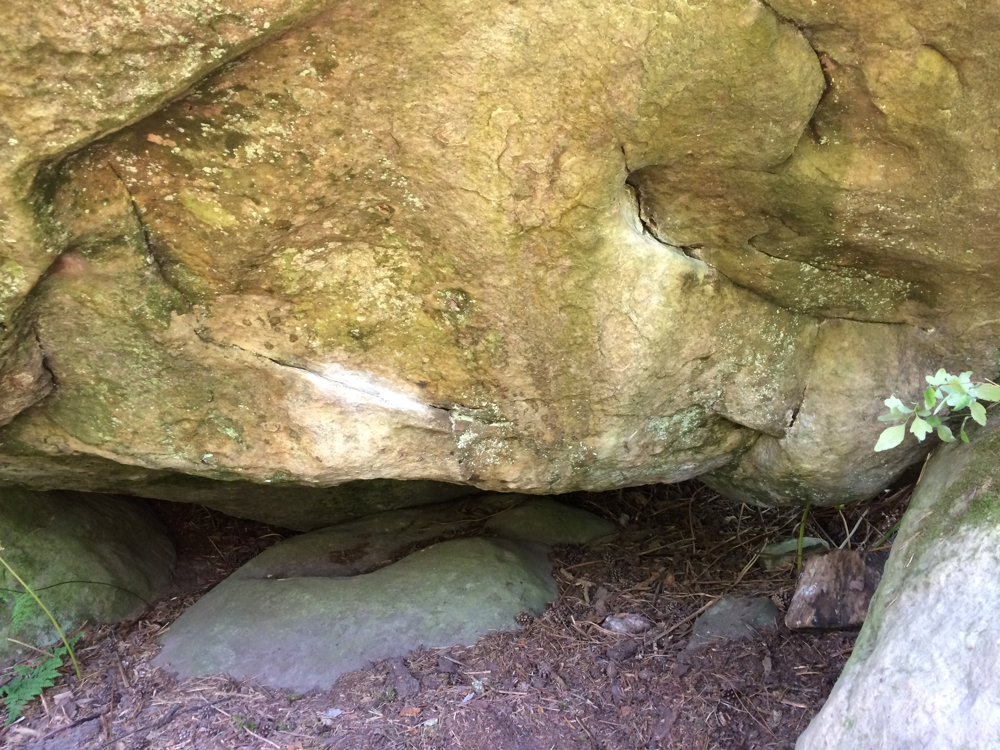
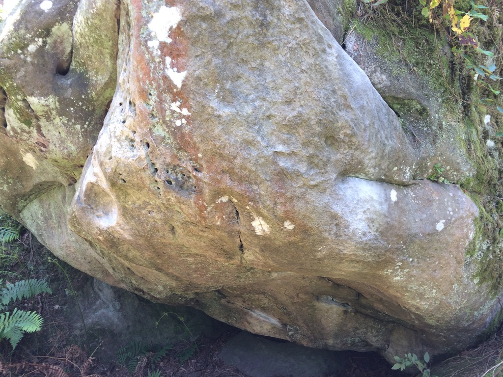
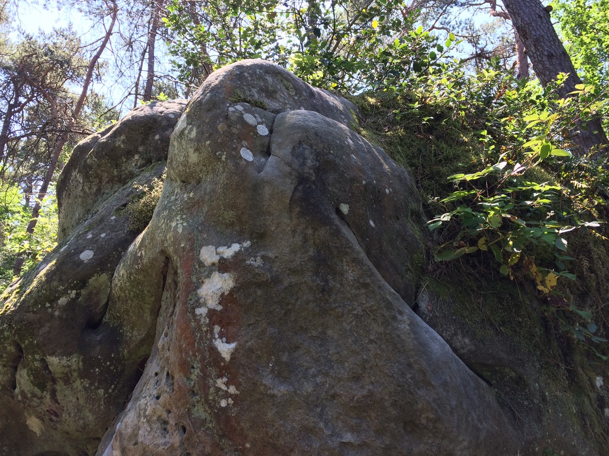

Biketor
7a, Rocher Canon Ouest, Fontainebleau
(26/05/2020 - Unfinished)

A short boulder, set away from the main Rocker Canon site. The area is easily reached by the N-line running south out of Gare de Lyon, Paris. At the end of the first 2020 lockdown, this area was my main climbing venue of any kind; no indoor training to be had. I'd been working on my strength, both finger and upper body and came out of lockdown feeling strong. I spend perhaps 6 sessions projecting this boulder over several weeks but never quite pulled it together, the upper section went quietly, but the start felt impossible. Still, as the first boulder I projected and the lovely setting, away from the touristy part of the site, it sits as one of my favourite climbing memories.
Start completely underneath the boulder, laying on your back. The line then pulls onto a two handed crimp, feet level with hands off to the right, perpendicular to the line. Amounting to forward leaver off a crimpy edge, with your legs twisted at 90 degrees, this boulder is spectacularly sandbagged.At least the steep section is.
From the starting stance, there is another crimp for the right hand, once you have this, you can bring your left foot to meet your left hand on the starting crimp. Then the right hand is free to come up to the third and last steep crimp (not pictured) above the starting hold.
Things get dynamic now (well dynamic for me, I'm usually only slightly less static than the rock I'm climbing). First match the left hand to the right. Then to obtain the shallow crater on the left, just over the edge of the steep section, swing up hight and slap the rock with your left hand.
A small crimp above the crater gives the best friction with your palm sitting in the crater. This is followed with another big slappy move out right, into full fridge mode.
From here the next set of moves involve bumping both hands one after another further up the rock, following the two obvious lines with taper towards the prow of the boulder. All the time slightly adjusting foot placements to make each hand move less demanding.
Once both hands are high on both sides of the prow, the most technical move is to raise your left led high just above the crater and either heal hook from the side or toe-poke the top of the crimp. I suggest the heel hook as it allows you to pull in hard to the rock, where you can now move your left hand to the upper right side-pull.
From the right side-pull (with left hand), release the left heel hook, re-place the left foot to the centre of the prow. This allows you to reach up with the right hand to just above the left, pulling in the same direction. This unlocks the final move, straighten the left leg and swing the right up to place your right foot where your previous right hand was. Once here step up to top out the boulder.
The down climb is either jump (strictly speaking always an option) or make your way through the brambles and shrubs over the back of the boulder.
The short video below shows the upper section, climbed in wobbly style and expertly commentated on by the cameraman, Charles. As I couldn't do the lower section, this is obviously not shown. Maybe one day.